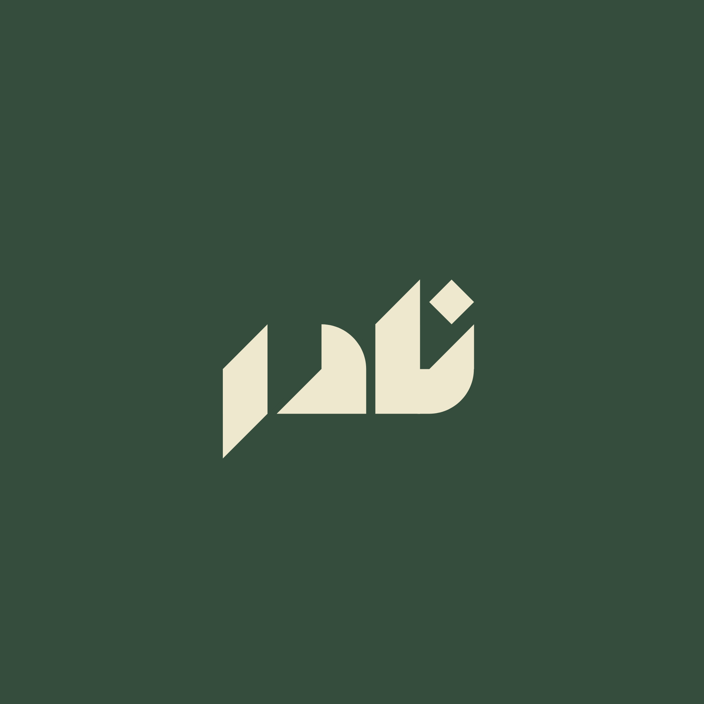

نادر الشمراني
خريج إدارة عامة · أوظف الذكاء الاصطناعي لبناء أدوات ورفع كفاءة العمليات
تحميل السيرة الذاتية
نسخة PDF محدثة
واتساب — تواصل مهني
للشغل والوظائف والشراكات
لينكد إن
ملفي المهني
Nune
نظام تشغيل شخصي بالذكاء الاصطناعي
منصة مملوكة أُسست من الصفر تُصنّع وكلاء ذكيين ومحركات أتمتة، وتدير المشاريع والمعرفة والاتصالات — مركز تحكم شخصي كامل.
منصة
وكلاء ذكيون
أتمتة
استعرض المعرض ←
تطبيقات الذكاء الاصطناعي
مجموعة تطبيقات بنتها بالذكاء الاصطناعي
أدوات بنيتها تحل مشاكل حقيقية: فاحص متاجر يولّد تقرير تقييم احترافي، مراقب أسعار منافسين ينبّه على كل تغيّر — والمجموعة تتوسع.
ذكاء اصطناعي
أتمتة
أدوات
استعرض المعرض ←